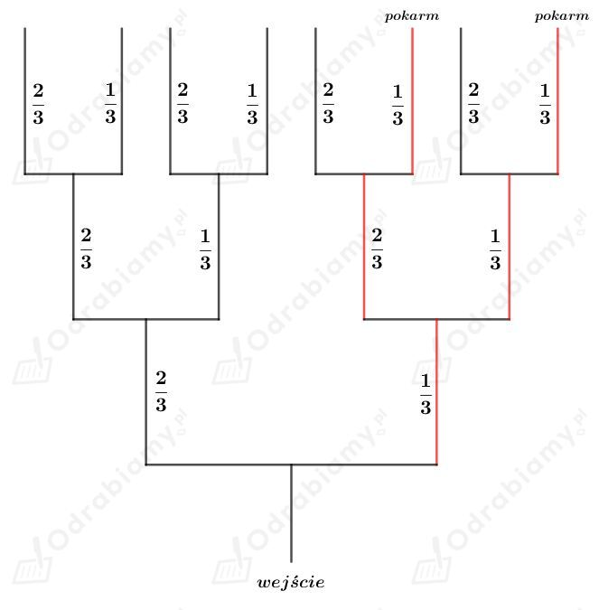
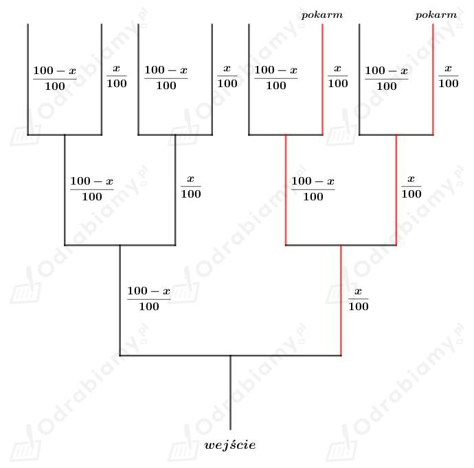
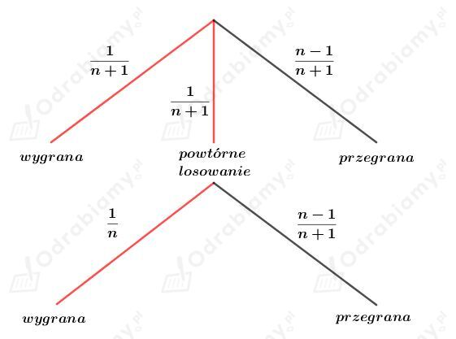

Zauważmy, że alarm zadziała, jeśli zostanie uruchomiony przynajmniej jeden czujnik.
Niech A będzie zdarzeniem polegającym na tym, że pożar zostanie wykryty przez pojedynczy czujnik. Z treści zadania wiemy, że
Niech B będzie zdarzeniem polegającym na tym, że żaden z czujników nie zadziała. Wyznaczmy prawdopodobieństwo zdarzenia B:
Zatem B' jest zdarzeniem polegającym na tym, że co najmniej jeden czujnik wykryje pożar. Mamy więc:
Odp. Prawdopodobieństwo tego, że alarm zostanie uruchomiony wynosi 0,936.
a)
Wiemy, że szczur dwa razy częściej skręca w lewo niż w prawo. Oznaczmy prawdopodobieństwo pójścia w prawo jako p, a prawdopodobieństwo pójścia w lewo jako 2p. Szczur ma tylko dwie możliwości - może pójść albo w prawo, albo w lewo, dlatego suma tych prawdopodobieństw musi być równa 1. Mamy więc:
więc
Wiemy zatem, że szczur idzie w prawo z prawdopodobieństwem 1/3 oraz w lewo z prawdopodobieństwem 2/3.
Zapiszmy te dane na rysunku:

Niech A będzie zdarzeniem polegającym na tym, że szczur dotrze do pokarmu.
Wyznaczmy prawdopodobieństwo zdarzenia A. Mamy:
b)
Wiemy, że szczur skręca w prawo w x% przypadków, więc prawdopodobieństwo tego, że szczur skręci w prawo wynosi x/100.
Suma prawdopodobieństw pójścia w prawo i pójścia w lewo musi być równa 1, zatem prawdopodobieństwo tego, że szczur skręci w lewo wynosi:
Zapiszmy te dane na rysunku:

Niech A będzie zdarzeniem polegającym na tym, że szczur dotrze do pokarmu. Wyznaczmy prawdopodobieństwo zdarzenia A. Mamy:
Z treści zadania wiemy, że P(A)=9/16.
Otrzymujemy zatem równanie:
Dana jest urna, w której znajduje się 9 kul. Niech n będzie liczbą kul białych, wtedy 9-n jest liczbą kul zielonych. Zauważmy, że n jest liczbą naturalną dodatnią mniejszą od 9.
Wyznaczmy prawdopodobieństwo wylosowania dwóch kul tego samego koloru, czyli dwie białe lub dwie zielone. Mamy:
Wyznaczmy prawdopodobieństwo wylosowania dwóch kul różnego koloru, czyli biała i zielona lub zielona i biała. Mamy:
Z treści zadania wiemy, że powyższe prawdopodobieństwa są równe. Otrzymujemy więc równanie:
Odp. W tej urnie są 3 lub 6 białych kul.
Dana jest urna, w której są 3 kule białe i n kul czarnych (n>0), czyli razem 3+n kul.
Możliwości losowania, w których przynajmniej jedna kula jest biała:
W treści zadania nie podano czy losujemy kule ze zwracaniem czy bez zwracania, zatem musimy rozważyć dwa przypadki:
1) Losujemy kule bez zwracania.
Wyznaczmy prawdopodobieństwo wylosowania przynajmniej jednej kuli białej. Mamy:
Wiemy, że to prawdopodobieństwo jest większe od 0,5 zatem otrzymujemy nierówność:
W tej urnie może być 1 lub 2 lub 3 lub 4 lub 5 lub 6 lub 7 czarnych kul.
Zatem w urnie może być 4 lub 5 lub 6 lub 7 lub 8 lub 9 lub 10 wszystkich kul.
2) Losujemy kule ze zwracaniem.
Wyznaczmy prawdopodobieństwo wylosowania przynajmniej jednej kuli białej. Mamy:
Wiemy, że to prawdopodobieństwo jest większe od 0,5 zatem otrzymujemy nierówność:
W tej urnie może być 1 lub 2 lub 3 lub 4 lub 5 lub 6 lub 7 czarnych kul.
Zatem w urnie może być 4 lub 5 lub 6 lub 7 lub 8 lub 9 lub 10 wszystkich kul.
Odp. W obu rozważanych przypadkach otrzymaliśmy, że w urnie może być 4 lub 5 lub 6 lub 7 lub 8 lub 9 lub 10 wszystkich kul.
Na loterii jest n losów. Wśród nich jest 6 losów wygrywających i n-6 losów przegrywających. Zauważmy, że n jest liczbą naturalną taką, że n≥6.
a)
Wyznaczmy prawdopodobieństwo wylosowania dwóch wygrywających losów. Mamy:
Z treści zadania wiemy, że prawdopodobieństwo to jest większe od 1/5. Zapiszmy więc nierówność:
Uwzględniając założenie otrzymujemy:
b)
Wyznaczmy prawdopodobieństwo wylosowania dwóch losów przegrywających. Mamy:
Zdarzenie polegające na wylosowaniu przynajmniej jednego losu wygrywającego jest zdarzeniem przeciwnym do wylosowania dwóch lodów przegrywających.
Wyznaczmy prawdopodobieństwo wylosowania przynajmniej jednego wygrywającego losu. Mamy:
Z treści zadania wiemy, że prawdopodobieństwo to jest większe od 1/3. Otrzymujemy zatem nierówność:
Uwzględniając założenie otrzymujemy:
Na loterii jest 50 losów - 15 wygrywających i 35 przegrywających. Nagrodami są: jedna nagroda 100 zł, cztery po 10 zł, dziesięć po 5 zł. Koszt jednego losu to 5 zł.
a)
Dowolny jeden wygrywający los jest warty nie mniej niż poniesione koszty, ponieważ los kosztuje 5 zł, a najniższa nagroda to 5 zł.
Wyznaczmy prawdopodobieństwo wylosowania jednego wygrywającego losu. Mamy:
Odp. Prawdopodobieństwo tego, że wygrana będzie nie mniejsza od poniesionych kosztów wynosi 0,3.
b)
Niesprzyjających możliwości tego, aby wygrana byłą nie mniejsza od poniesionych kosztów przy zakupie dwóch losów:
Wyznaczmy prawdopodobieństwo wystąpienia niesprzyjających możliwości. Mamy:
Wyznaczmy prawdopodobieństwo wystąpienia sprzyjających możliwości. Mamy:
Odp. Prawdopodobieństwo tego, że wygrana będzie nie mniejsza od poniesionych kosztów przy zakupie dwóch losów wynosi 8/35.
Loteria składa się z n (n>0) losów - w tym 1 wygrywający i n-1 przegrywających.
Niech A będzie zdarzeniem polegającym na wylosowaniu losu wygrywającego.
Wyznaczmy prawdopodobieństwo zdarzenia A. Mamy:
Do puli losów dokładamy jeden los uprawniający do ponownego losowania. Loteria składa się wtedy z n+1 losów. Liczba losów wygrywających i przegrywających pozostaje bez zmian.
Przedstawmy na drzewie ilustrację tego doświadczenia:

Niech B będzie zdarzeniem polegającym na wylosowaniu losu wygrywającego.
Wyznaczmy prawdopodobieństwo zdarzenia B. Mamy:
Otrzymaliśmy
co kończy dowód.